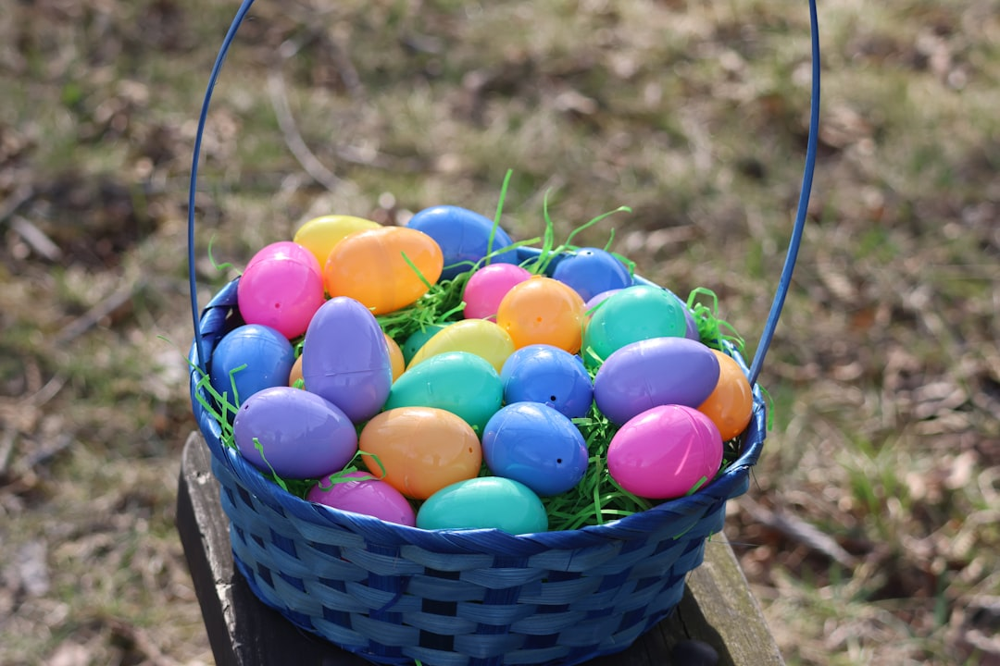
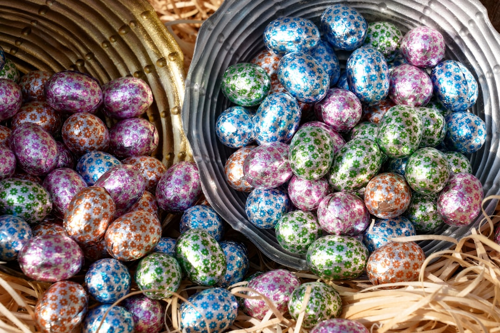
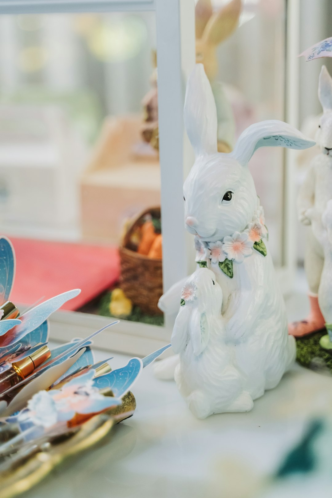

Hitória da Páscoa
A Páscoa é uma das comemorações mais importantes das culturas ocidentais que significa a renovação e a esperança.
No entanto, como muitos pensam, essa comemoração não deriva do ideário cristão, uma vez que remonta a civilizações antigas.
Nesse momento, os antigos povos pagãos (celtas, fenícios, egípcios, etc.) festejavam a chegada da primavera e o fim do inverno. Naquele contexto, essa celebração simbolizava a sobrevivência da espécie humana.
Origem da palavra Páscoa
Derivado do grego Paska, do latim, o termo Pascua tem uma origem religiosa e significa "alimento", ou seja, o fim do jejum da quaresma.
Por sua vez, do hebraico o termo Pesach significa "passagem, salto ou pulo", e remete à libertação do povo judeu.
Do inglês, Easter, que significa Páscoa, está intimamente ligado aos cultos pagãos da deusa da fertilidade da mitologia nórdica e germânica Eostre, Ostera ou Ostara.
Acredita-se que o coelho e os ovos coloridos surgiram daí, uma vez que são símbolos de renovação da deusa.
Páscoa Cristã
Na liturgia cristã, a Páscoa representa a morte e a ressurreição de Jesus Cristo. Ela é considerada uma das mais importantes datas comemorativas que simboliza uma nova vida, nova era, esperança.
A festa da Páscoa ocorre entre os dias 22 de março (data do equinócio) e 25 de abril. A semana que antecede o domingo de Páscoa é denominada de “Semana Santa”.
A Semana Santa é constituída pelo Domingo de Ramos, Segunda-Feira Santa, Terça-Feira Santa, Quarta-Feira Santa, Quinta-Feira Santa, Sexta-Feira Santa ou Sexta-Feira da Paixão, Sábado Santo ou Sábado de Aleluia e Domingo de Páscoa.
A Quaresma representa os 40 dias que antecedem a Páscoa, e corresponde a uma forma de penitência realizada pelos fiéis cristãos. É comum as pessoas fazerem promessas durante esse período.
Páscoa Judaica
Na cultura judaica, a Páscoa é comemorada em 8 dias de festa e simboliza um dos momentos mais importantes de libertação do povo judeu (por volta de 1250 a.C.). Ele faz referência ao êxodo de Israel, após o flagelo das dez pragas do Egito, que ocorreu durante o reinado do faraó Ramsés II, narrado no livro de Êxodo.
Anterior à festa Cristã, da mesma forma que no Cristianismo, essa data tão significativa simboliza a redenção do povo judeu e, portanto, a esperança e o surgimento de uma nova vida.
Um dos símbolos mais importantes da festa judaica é denominado de “Matzá” (pão sem fermento), que representa a fé.
Esse elemento está relacionado com a história de fuga dos hebreus do Egito, os quais não tiverem tempo de colocar o fermento no pão.
Por isso, nas comemorações e festejos, chamada de “Festa dos Pães Ázimos” (Chag haMatzot), é proibido comer pães com fermento.
Símbolos da Páscoa
Muitos símbolos estão associados a essa celebração, sendo que os principais são:
Coelho da Páscoa
Por ser o símbolo da fertilidade e do nascimento em diversas culturas, o coelho é uma das figuras mais centrais dessa comemoração. Desde a antiguidade, ele está associado à troca de ovos realizada por muitos povos, como símbolo de sorte.
Ovos de Páscoa
Os ovos de páscoa (cozidos e coloridos ou de chocolate), carregam o germe da vida e representam a fertilidade, o nascimento, a esperança, a renovação e a criação cíclica. Na cultura moderna, é comum presentear as pessoas com ovos de chocolate ou esconder ovos coloridos no domingo de páscoa, os quais serão encontrados pelas crianças.
Círio Pascal
O círio pascal são as velas que serão acesas para comemorar o retorno de Jesus Cristo, ou seja, a vida nova. Marcadas pelas letras gregas alfa e ômega, os círios representam o início e o fim, simbolizando assim, a luz de Cristo que traz a esperança.
Colomba Pascal
Em formato de pomba (importante símbolo cristão), a colomba pascal é um pão doce muito presente nas comemorações da Páscoa. Ele tem origem na Itália e representa um símbolo de paz.
Cordeiro
O cordeiro é um importante símbolo pascal, uma vez esse animal representa o sacrifício de Jesus Cristo para salvar os homens de seus pecados. Na tradição judaica, ele também é muito importante e representa a libertação dos homens.
Pão e Vinho
O pão e o vinho, dois elementos muito emblemáticos no cristianismo, representam o corpo e o sangue de Cristo e simbolizam a vida eterna. Na última ceia, Jesus repartiu o pão e deu aos seus discípulos.
Curiosidade sobre a Páscoa
A origem do mito da sexta-feira 13 como um dia de azar tem uma de suas origens na Páscoa. Afinal, na Última Ceia, havia 13 pessoas à mesa e Jesus foi crucificado numa sexta-feira.